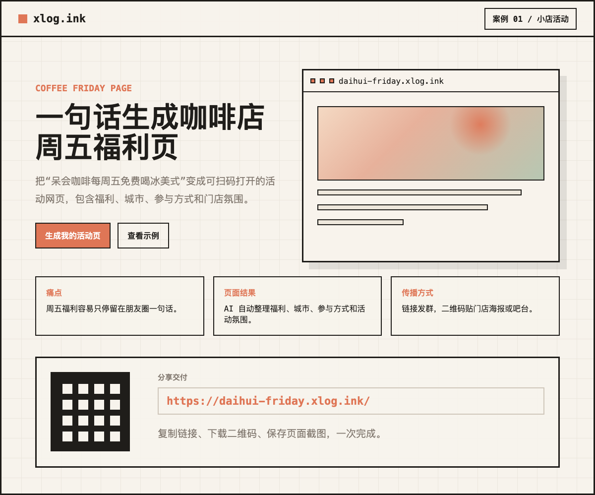

把“呆会咖啡每周五免费喝冰美式”变成可扫码打开的活动网页，包含福利、城市、参与方式和门店氛围。
适合咖啡店、餐饮店、工作室做短期或周期性活动宣传。把活动规则、城市、福利和参与方式统一到一个页面，发群、发朋友圈、贴二维码都能用同一个入口。
“帮我做一个咖啡店活动页，店名叫呆会咖啡，青岛市，每周五免费喝冰美式，到店即可参加，风格轻松有记忆点。”

链接、二维码、页面截图和后续编辑入口都在对话里完成。